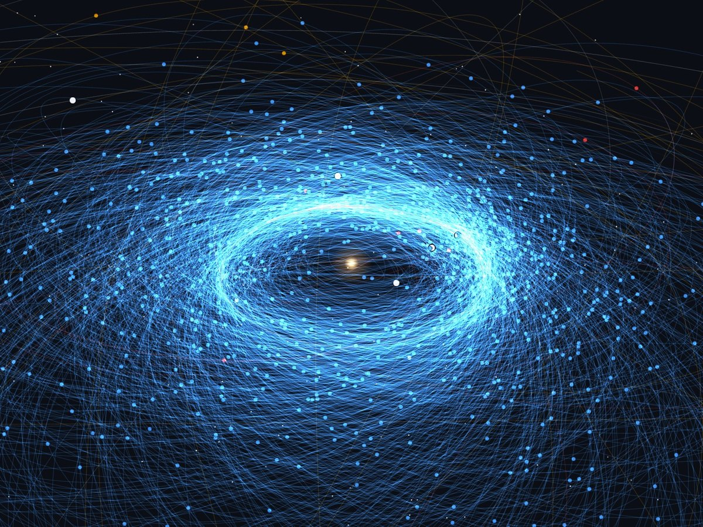
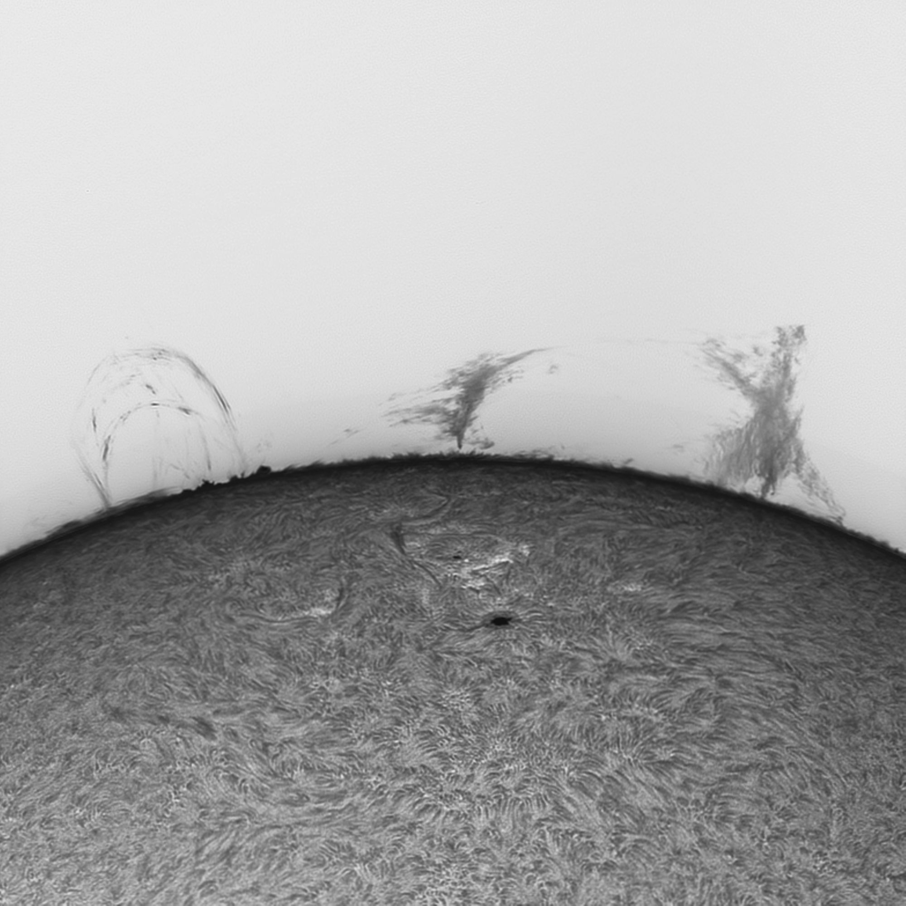
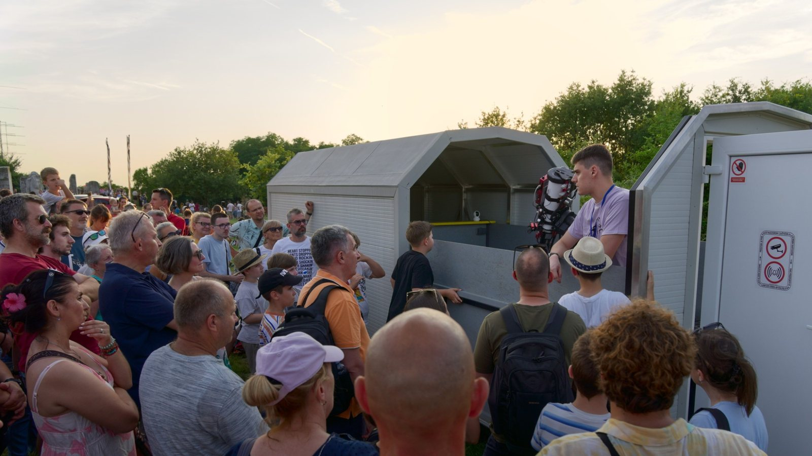
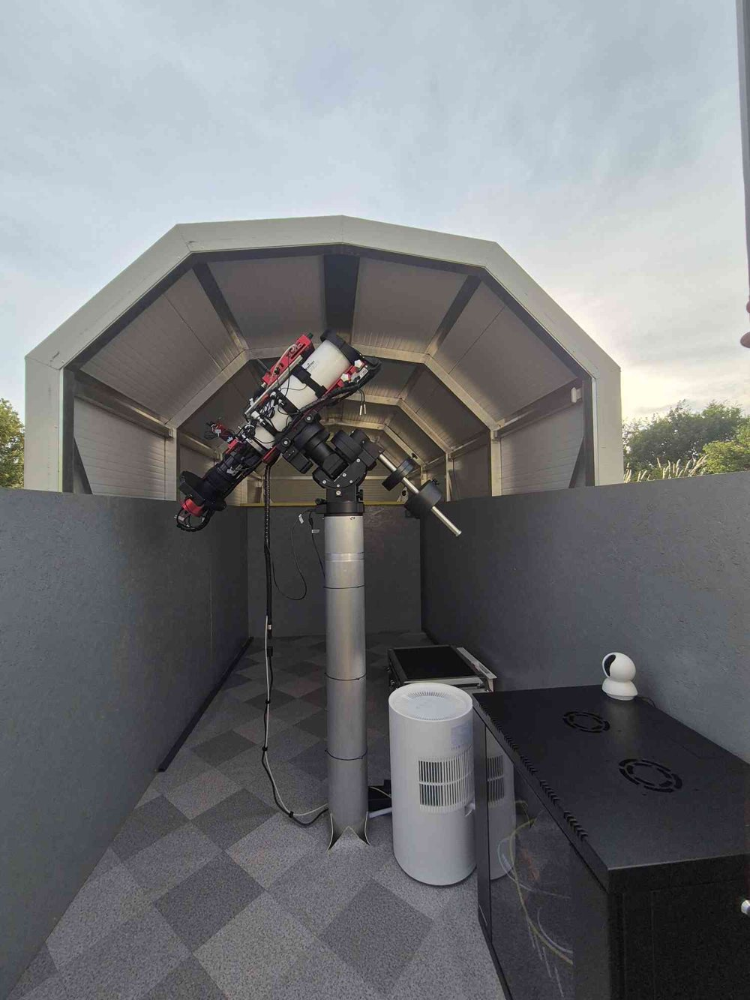
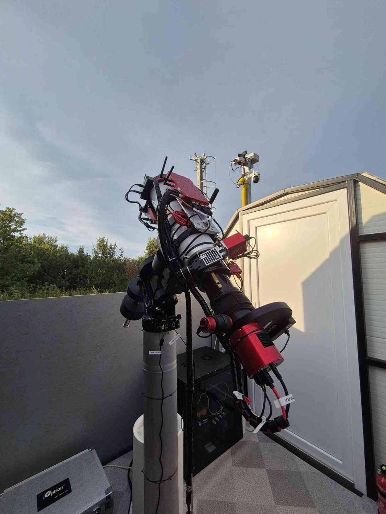

Istraživanje
Potvrda i otkrivanje objekata blizu Zemlje
Većinu novootkrivenih objekata blizu Zemlje (NEO) veliki survey teleskopi vide samo jednu noć, prije nego što postanu previše tamni ili se udalje. Objavljuju se na popisu za potvrdu (NEO Confirmation Page, NEOCP) Centra za mala tijela Sunčeva sustava, a putanju je moguće odrediti samo ako ih druge zvjezdarnice ponovno izmjere u roku od nekoliko sati. To je moj glavni posao: teleskopom promjera 1,0 m (f/2,9) na Tičanu (MPC kod L01) ponovno pronalazim kandidate s NEOCP-a, mjerim njihove položaje (astrometrija) i šaljem ih Centru za mala tijela Sunčeva sustava, često kao prva stanica koja potvrđuje novi objekt. Usput suotkrivamo i nove objekte blizu Zemlje.
Od 2017. Višnjan je postao jedna od najproduktivnijih stanica za potvrdna opažanja na svijetu. Prema MPEC Watchu, L01 je u 2025. bio 5. u svijetu po broju MPEC cirkulara otkrića i 1. u Europi. Broj MPEC cirkulara Centra za mala tijela Sunčeva sustava s mojim opažanjima: 1.125, što me svrstava na 112. mjesto od 6.009 opažača pojedinaca navedenih u MPEC-ovima od 1993.
Ukupan broj objekata koje sam promatrao i mjerio: 1.118. Među njima su kometi (31), uključujući međuzvjezdani komet 3I/ATLAS, koji smo izmjerili u noći njegova otkrića (1. srpnja 2025., MPEC 2025-N12), potencijalno opasni asteroidi (13) i tijela veličine tek nekoliko metara poput 2025 PU1 (H = 31,4). Svi su ucrtani u interaktivnu 3D kartu Sunčevog sustava, uz statistiku i metodu izračuna poretka.

Fizika Sunca i snimanje Sunca u visokoj razlučivosti
Danju se rad zvjezdarnice nastavlja na Suncu. Kvaliteta slike ovisi o zraku iznad teleskopa, pa dnevni seeing u Zvjezdarnici Višnjan mjerim monitorom sunčeve scintilacije i razvijam nove ideje za snimanje u visokoj razlučivosti, koristeći iznimnu mirnoću atmosfere nad sjevernim Jadranom.


Softver za robotizirane zvjezdarnice
Razvijam softver za robotizirane zvjezdarnice te uvodim novi softver i hardver vodeći potpuno daljinski upravljanu robotiziranu zvjezdarnicu na Tičanu.
Od prosinca 2023. odgovoran sam za njezinu tehničku integraciju i puštanje u rad: integriram, konfiguriram i provjeravam optičke, mehaničke, mrežne, podatkovne i upravljačke sustave kako bi zajedno radili kao jedna pouzdana platforma te razvijam postupke za daljinski rad, nadzor kvarova, oporavak sustava i siguran rad bez nadzora. Programska podrška obuhvaća N.I.N.A., MaxIm DL, Tycho Tracker, PixInsight, Zabbix, Grafanu i skripte izrađene za zvjezdarnicu.
Tehnički pregledni rad o zvjezdarnici uskoro izlazi.





